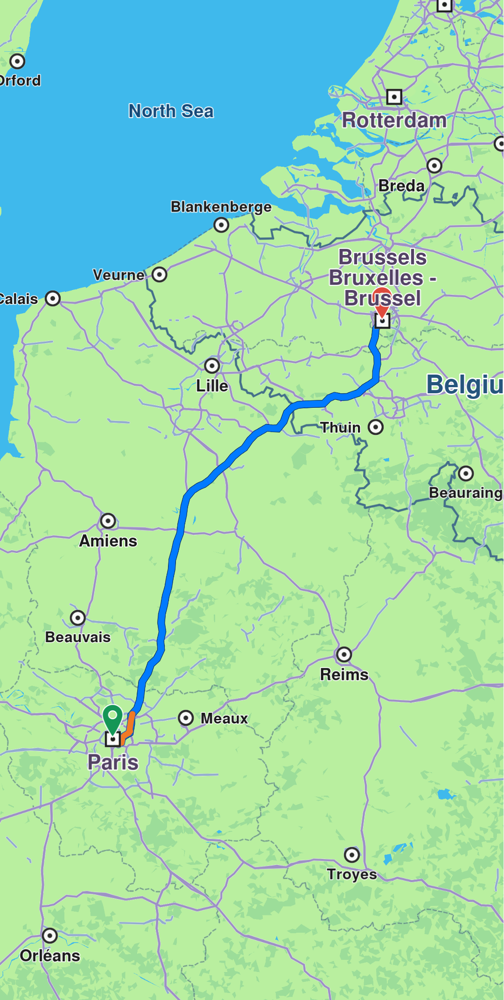
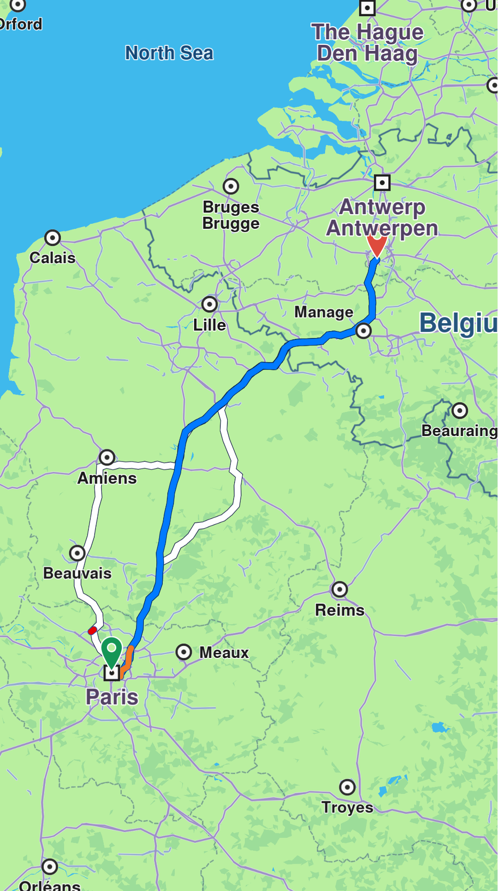
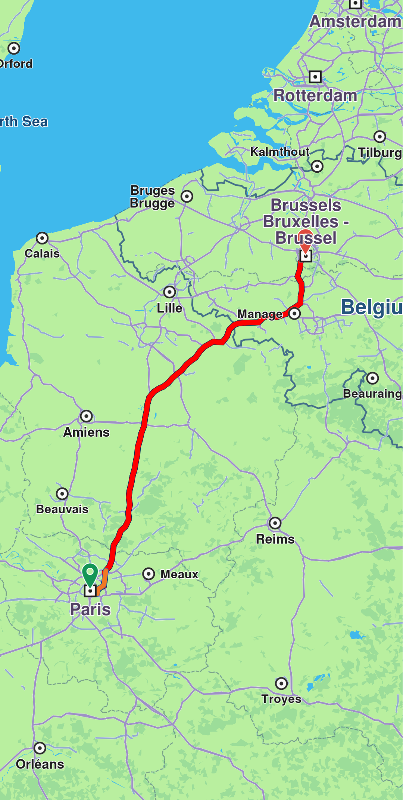
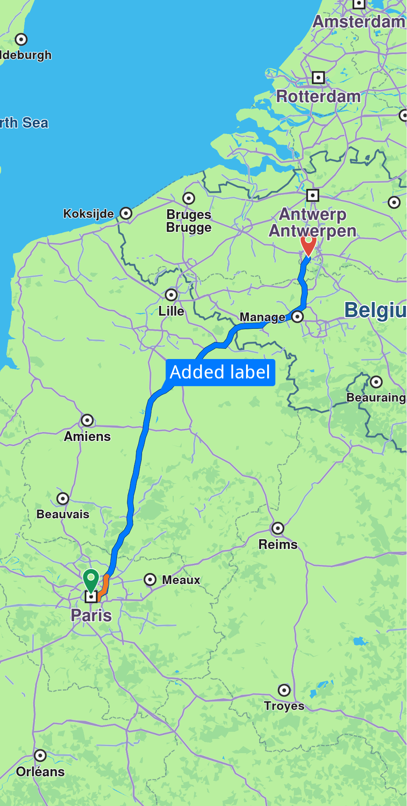
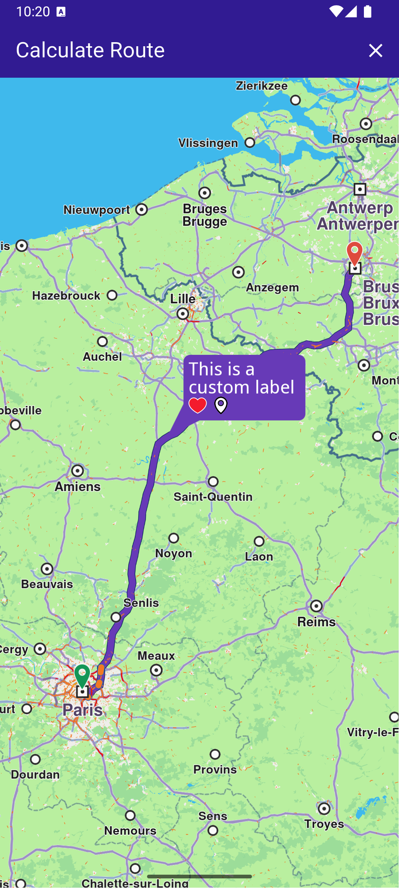
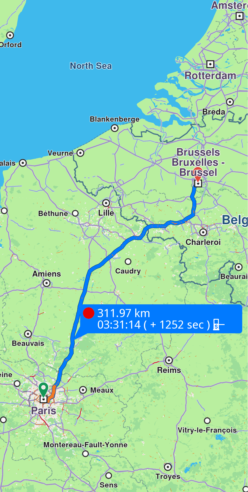

Display Routes¶
Learn how to display routes on the map, customize their appearance, and manage route labels.
Add Routes To The Map¶
Display routes on the map using MapViewPreferences.routes.add(route, isMainRoute). Multiple routes can be displayed simultaneously, but only one can be the main route, with others treated as secondary. Specify the main route by passing true to the bMainRoute parameter when calling MapViewRoutesCollection.add, or use the MapViewRoutesCollection.mainRoute setter.
mapController.preferences.routes.add(route, true);
mapController.centerOnRoute(route);
Route displayed💡 Tip: To center on a route with padding, refer to the Adjust Map View guide. Utilize the screenRect parameter in the centerOnRoute method to define the specific region of the viewport that should be centered.
mapController.preferences.routes.add(route1, true);
mapController.preferences.routes.add(route2, false);
mapController.preferences.routes.add(route3, false);
mapController.centerOnMapRoutes();
Three routes displayed, one in the middle is mainCustomize Route Appearance¶
Customize route appearance using RouteRenderSettings when adding the route via the routeRenderSettings optional parameter, or later using the MapViewRoute.renderSettings setter.
final renderSettings = RouteRenderSettings(innerColor: Color.fromARGB(255, 255, 0, 0));
mapController.preferences.routes.add(route, true, routeRenderSettings: renderSettings)final mapViewRoute = mapController.preferences.routes.getMapViewRoute(0);
mapViewRoute?.renderSettings = RouteRenderSettings(innerColor: Color.fromARGB(255, 255, 0, 0));RouteRenderSettings are measured in millimeters.

Route displayed with custom render settingsRemove Routes¶
Remove all displayed routes using MapViewRoutesCollection.clear(). To remove only secondary routes while keeping the main route, use mapController.preferences.routes.clearAllButMainRoute().
Add Route Labels¶
Routes can include labels that display information such as ETA, distance, toll prices, and more. Attach a label to a route using the label optional parameter of the MapViewRoutesCollection.add method:

Route with labelAdd icons to labels¶
Enhance labels by adding up to two icons using the optional labelIcons parameter, which accepts a List<Img>. Access available icons through the GemIcon enum.
controller.preferences.routes.add(routes.first, true,
label: "This is a custom label",
labelIcons: [
SdkSettings.getImgById(GemIcon.favoriteHeart.id)!,
SdkSettings.getImgById(GemIcon.waypointFinish.id)!,
]);
Label with custom iconsAuto-generate labels¶
Auto-generate labels using the autoGenerateLabel parameter:
mapController.preferences.routes.add(route, true, autoGenerateLabel: true);
Route with generated label🚨 Alert: Enabling
autoGenerateLabelwill override any customizations made with the label andlabelIconsparameters.
Hide labels¶
Hide a route label by calling MapViewRoutesCollection.hideLabel(route). You can also manage labels through a MapViewRoute object using the labelText setter to assign a label or the hideLabel method to hide it.
Check Visible Route Portion¶
Retrieve the visible portion of a route—defined by its start and end distances in meters—using the getVisibleRouteInterval method from the GemMapController:
final (startRouteVisibleIntervalMeters, endRouteVisibleIntervalMeters) = controller.getVisibleRouteInterval(route);getVisibleRouteInterval method instead of using the entire viewport. The method returns (0,0) if the route is not visible on the provided viewport or region.